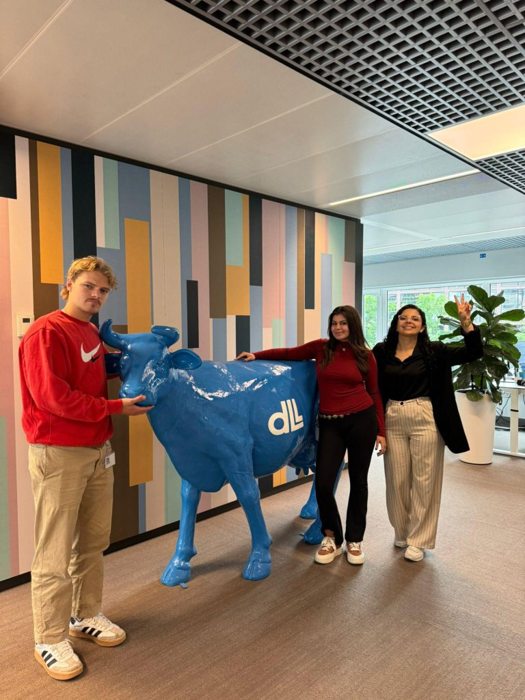
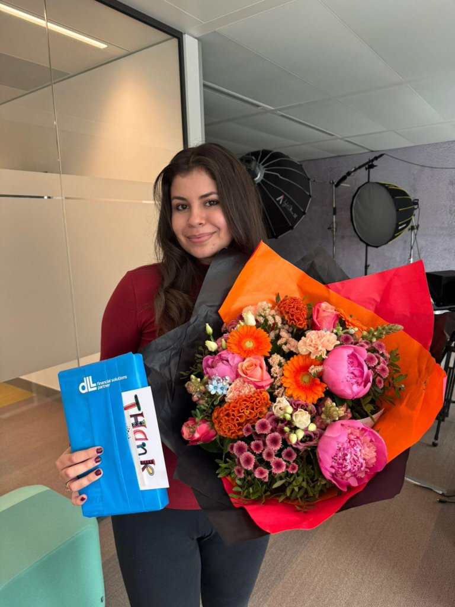

Learning & Development Intern
Gamifying onboarding at DLL
Designing the company's first game-like e-learning, an experience that made its way into all 27 countries DLL operates in.
The challenge
DLL's existing training material relied on fairly traditional e-learning formats, informative but not exactly memorable. My assignment as the Learning & Development Intern was to find a way to make internal training genuinely engaging, something employees across very different countries and roles would actually want to finish.
The concept
The original idea from stakeholders was to model the e-learning after "De Slimste Mens," a Dutch television game show. It made sense in the room, but I realized quickly it wouldn't land for a company operating across 27 countries where most employees had never heard of it. So I came up with an original concept instead: "The Smartest Product Owner," a championship-style e-learning where employees compete across four rounds for the title of Ultimate Catalogue Champion, and, quite literally, a Champion's Mug.
What I did
I designed and built the entire e-learning experience, using gamification principles and interactive storytelling to turn a standard training module into a genuine competition. I built it out in Articulate Storyline and Articulate Rise, applying design thinking to keep the experience intuitive even for employees with no gaming background.
The four rounds
Each round tested a different skill and was built as its own mini-game inside the e-learning. The full course is under NDA, so instead of gameplay footage, here are the tutorial walkthroughs for each round:
Piece Perfect
Folder Chaos
Fact or Fiction
Mind Sprint
The impact: "The Smartest Product Owner" became the first game-like e-learning in DLL's history, and it was rolled out and played successfully across all 27 countries where DLL operates.
Ownership & credits
I took full ownership of this project: the concept, storytelling, UX/UI design, and building it out in Articulate Storyline and Rise were all mine. Two people supported the execution: my colleague Thijs van Diemen created the visual assets, and my supervisor Luisa Cardenas recorded the tutorial videos shown above.

Beyond the e-learning
- Figma workshop: designed and taught my own internal workshop on Figma, helping colleagues outside the design team get comfortable with the tool.
Since the full e-learning is under NDA, here's what my supervisor Luisa Cardenas had to say about our work together instead of a demo video.
Read the recommendation letterBy the end of the internship, I'd made friends and gotten a proper send-off to go with it, flowers included.
